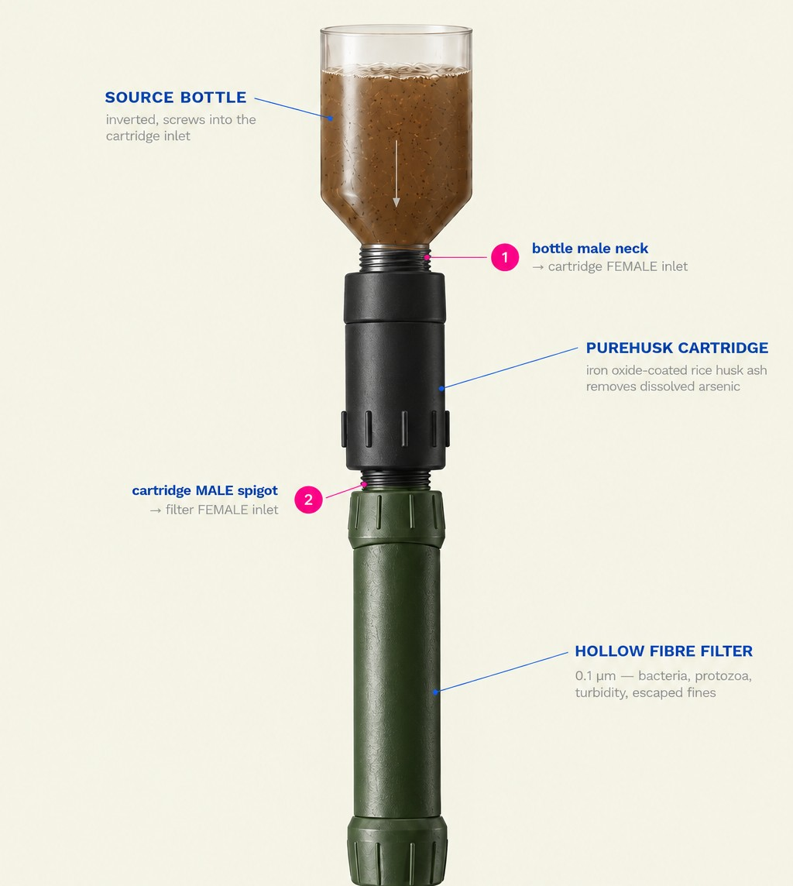
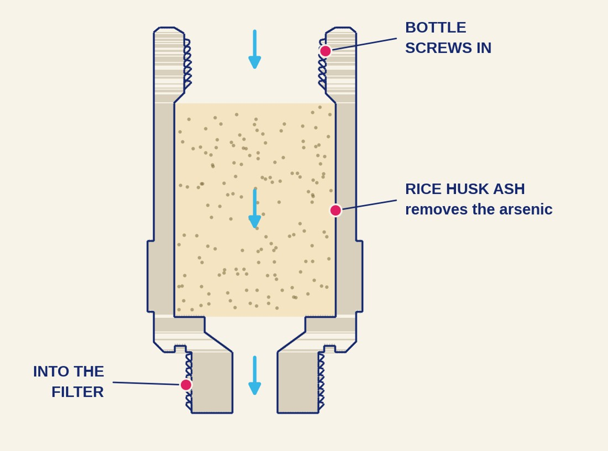

How it works
Two stages. One thread.
PureHusk is a portable attachment that threads onto a standard bottle and sits inline above a hollow fiber filter. Water drips from an inverted source bottle, through the rice husk ash, through the membrane, and into a clean vessel.

The path of the water
Goal is the WHO guideline. Whether PureHusk reaches it is what the laboratory is testing.
Stage 1
The PureHusk cartridge
A replaceable pouch of iron oxide–coated rice husk ash (RHA). It adsorbs dissolved arsenic as the water drips through. Prior research also finds iron-modified RHA viable for other heavy metals.
Prototype figures.

Stage 2
The membrane, and why both stages are needed.
A commercial hollow fiber membrane sits beneath stage 1. It removes bacteria, protozoa, turbidity, sediment and some microplastics, and it catches any media fines that escape the pouch. The membrane is already validated, so testing targets only the PureHusk attachment.
A membrane cannot remove dissolved arsenic.
Arsenate and arsenite ions are far smaller than any micro- or ultrafiltration pore. LifeStraw states that its products do not remove arsenic, and the same applies to Sawyer Squeeze. Membranes address pathogens only. That is why the adsorption stage has to exist.
Plain rice husk ash is a weak adsorbent.
Arsenic binds to iron-oxide surface sites, not to the silica that makes up most of the ash. Iron modification is what makes the material work. So the iron-coated media goes first, and the membrane comes after.
Arsenic adsorption capacity, in mg of arsenic per gram of media. Values come from separate published studies.
Prior research reports 50–82% arsenic removal with unmodified RHA and about 90% with iron-modified RHA (Sandhi et al. 2022). PureHusk's own laboratory target is 90–99%.
The trade-off
Slow by design
Iron adsorption media need roughly 3 minutes of empty-bed contact time to work. For a cartridge this size, that caps flow at well under a litre per hour. PureHusk is a slow gravity-drip device, not a squeeze filter.
This is a physical trade-off, not a tuning problem. A small cartridge that claims high flow and high removal together deserves skepticism.
Upkeep
Swap the pouch, keep the filter
The pouch is replaceable. Maintenance is backwashing and pouch replacement, not replacing the whole filter. That is a direct answer to the maintenance burden that sank earlier household technologies.
The hollow fiber membrane sits below the cartridge, so any fine ash that escapes the pouch is stopped before it reaches the drinking vessel.